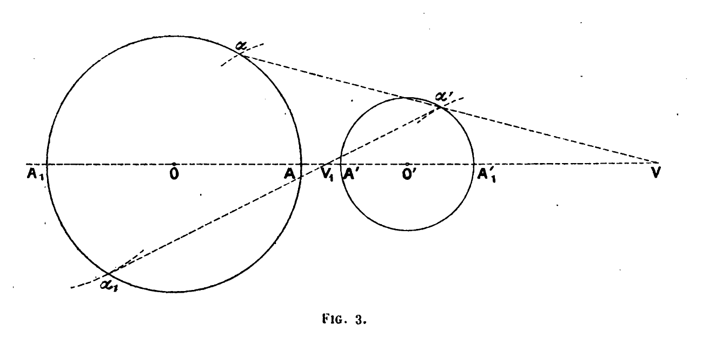

Problem XXIX: Common Tangents to Two Circles¶
Émile Lemoine — La Géométrographie (English Translation, pp. 16–19, fols. 0032–0035)
XXIX. — To construct the common tangents to two given circumferences O and O.
FIRST METHOD¶
First case. — The two circumferences are exterior [*] ; there are four common tangents; let O be the larger of the two circumferences.
f. 0033 · p. 17Operations |
\(R_1\) |
\(R_2\) |
\(C_1\) |
\(C_2\) |
\(C_3\) |
|---|---|---|---|---|---|
I trace OO. |
2 |
1 |
|||
OO cuts circumference O at A and circumference O at A, A and A being between points O and O. I take \(A'O'\) which I lay off on both sides of A at B and B, B being laid off in the sense AO. |
3 |
1 |
|||
I trace OOB, OOB. |
4 |
2 |
|||
I take the midpoint \(\omega\) of OO |
2 |
1 |
2 |
2 |
|
I describe \(\omega(\omega O)\) cutting OOB at I and J and OOB at I and J. |
2 |
1 |
|||
OI and OJ cut OOA at I and J. |
4 |
2 |
|||
OI and OJ cut OOA at I and J. |
4 |
2 |
|||
I trace the perpendiculars to OI and to OI drawn respectively through I and through I; they cut OO at V and V |
8 |
4 |
2 |
2 |
|
I trace VJ, VJ. |
4 |
2 |
|||
Total |
24 |
12 |
13 |
8 |
\(\mathrm{Op.} : (24R_1 + 12R_2 + 13C_1 + 8C_3)\) ; simplicity 57 ; exactitude 37 ; 12 lines, 8 circles.
If we have only to trace the two exterior common tangents or the two interior ones, we shall have only:
\(\mathrm{Op.} : (12R_1 + 6R_2 + 10C_1 + 6C_3)\) ; simplicity 34 ; exactitude 22 ; 6 lines, 6 circles.
Second case. — The circumferences intersect; there are only the two exterior tangents.
We find:
\(\mathrm{Op.} : (14R_1 + 7R_2 + 10C_1 + 6C_3)\) ; simplicity 37 ; exactitude 24 ; 7 lines, 6 circles.
Third case. — The circumferences touch externally.
We find:
\(\mathrm{Op.} : (16R_1 + 8R_2 + 12C_1 + 8C_3)\) ; simplicity 44 ; exactitude 28 ; 8 lines, 8 circles.
Let us note that B must be placed at the same time as B because B and B will then serve to draw the perpendicular at A to OA which is one of the tangents.
Fourth case. — The circumferences touch internally.
We trace OO and draw at A the perpendicular to OA:
f. 0034 · p. 18\(\mathrm{Op.} : (6R_1 + 3R_2 + C_1 + C_2)\) ; simplicity 11 ; exactitude 7 ; 3 lines, 1 circle.
SECOND METHOD¶
First case. — The two circumferences are exterior to each other (fig. 3).


I trace OO … \(\mathrm{op.} : (2R_1 + R_2)\).
To the notations of the first method, I add these:
I call A and A the second points of intersection of OO with the two circumferences O and O.
I take on circle O the points α and α₁ such that \(AO = A\alpha = A_1\alpha_1\) … \(\mathrm{op.} : (2C_1 + C_3)\).
α and α₁ are placed on opposite sides of OO; I take on circle O a point α' on the same side of OO as α and such that \(A'_1 O' = A'_1 \alpha'\); I trace αα' which cuts OO at V and α₁α' which cuts OO at V … \(\mathrm{op.}' : (4R_1 + 2R_2 + 2C_1 + C_3)\).
It now suffices for me to draw from V and from V the tangents either to O or to O by means of one of the two solutions indicated by construction XXVI, and to remark that their symbols must be diminished by \(\mathrm{op.} : (R_1 + R_2)\), since we can use in the first, as any diameter, the diameter OO already traced, and in the second likewise OO as the arbitrary secant that must be drawn; adopting the first construction, we have:
\(\mathrm{Op.} : (14R_1 + 7R_2 + 18C_1 + 8C_3)\) ; simplicity 48 ; exactitude 32 ; 7 lines, 8 circles.
Adopting the second:
\(\mathrm{Op.} : (14R_1 + 7R_2 + 16C_1 + 10C_3)\) ; simplicity 48 ; exactitude 30 ; 7 lines, 10 circles.
f. 0035 · p. 19If we have only to trace two common tangents, either exterior or interior, we shall have only:
\(\mathrm{Op.} : (8R_1 + 4R_2 + 11C_1 + 5C_3)\) ; simplicity 28 ; exactitude 19 ; 4 lines, 5 circles.
Second case. — The circumferences intersect.
By employing the first construction of no. XXVI, we find:
\(\mathrm{Op.} : (8R_1 + 4R_2 + 11C_1 + 5C_3)\) ; simplicity 28 ; exactitude 19 ; 4 lines, 5 circles.
By employing the second construction, we find:
\(\mathrm{Op.} : (8R_1 + 4R_2 + 10C_1 + 6C_3)\) ; simplicity 28 ; exactitude 18 ; 4 lines, 6 circles.
Third case. — The circumferences touch externally.
By employing the first construction:
\(\mathrm{Op.} : (14R_1 + 7R_2 + 13C_1 + 7C_3)\) ; simplicity 41 ; exactitude 27 ; 7 lines, 7 circles.
By employing the second construction:
\(\mathrm{Op.} : (14R_1 + 7R_2 + 12C_1 + 8C_3)\) ; simplicity 41 ; exactitude 26 ; 7 lines, 8 circles.
Fourth case. — The two circumferences touch internally; as in the first method.